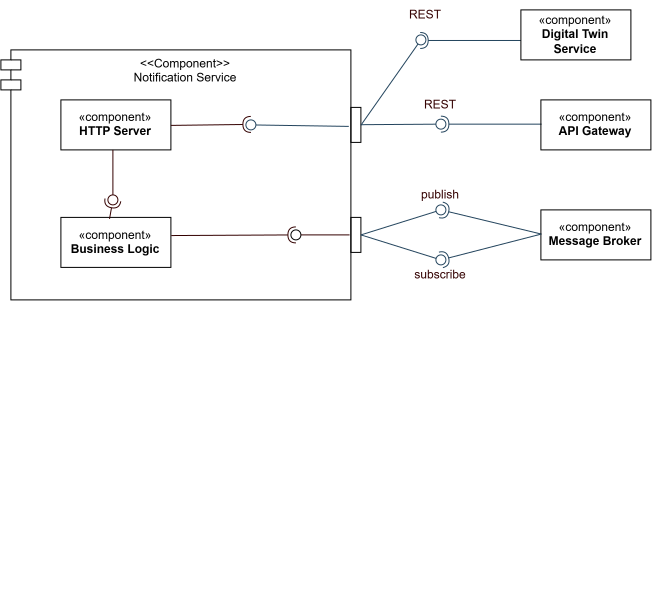

/
CrowdVision · source-available, not open source · © 2026 Nicolò Ghignatti
Bounded context: Alerting · Stack: Rust / Axum · Code-level walkthrough: Notification Service
The notification realises the Alerting context. Architecturally it is a rule engine and dispatcher: it decides whether an event warrants an alert and fans it out to the right people across more than one channel.
Ports & Adapters — driving adapters → use cases → ports → driven adapters — organised around two responsibilities that map directly onto the context’s two aggregates: managing where a principal can be reached, and what they have chosen to receive.
The service has two driving adapters into the same use cases, not just one. HTTP requests arrive through adapters/driving/http_api; temperature alerts also arrive through adapters/driving/alert_listener.rs, a Kafka consumer on the alerts topic — a driving path with no controller in front of it, since there’s no HTTP request to adapt. It keeps IN_FLIGHT records in flight at once, so a slow twin lookup never holds up the record behind it, and reconnects on its own if the stream dies. Both reach the same cooldown/domain-resolution/dual-delivery logic in service/alerts.rs.
graph TD
subgraph "Driving adapters"
HTTP["http_api/controllers.rs\nsubscribe · preferences · trigger · push/temperature"]
EL["alert_listener.rs\nKafka consumer: alerts"]
end
subgraph "Use cases — service/"
ALERTS["alerts.rs\ndebounce · resolve domains · dual delivery"]
PUSH["push.rs\nrecipient resolution · fan-out · cleanup"]
PREFS["preferences.rs\ndevice registration · opt-in writes"]
end
subgraph "Ports — service/ports.rs"
P["NotificationBus · Cooldown · DomainDirectory\nSubscriptionStore · PreferenceStore · PushSender · Clock"]
end
HTTP --> ALERTS
HTTP --> PREFS
EL --> ALERTS
ALERTS --> PUSH
ALERTS --> P
PUSH --> P
PREFS --> P
P --> TW[digital-twin: resolve domains]
P -.-> DB[(notification-db)]
P -.->|publish + cooldown| BR[(broker)]POST /trigger, POST /push/temperature, and the alerts Kafka subscription — the path that actually fires for every automatic sensor-driven threshold breach (see Communication & Data Flow’s Threshold Alert flow) — all resolve recipients via digital-twin, debounce, and dispatch on both channels. The two HTTP routes forward the calling user’s own x-gateway-claims header to digital-twin’s building→domain lookup; the event-listener path has no HTTP caller to forward a token from, so it presents a fixed system identity instead (system_claims_header() in domain/identity.rs) — safe only because that specific digital-twin route (GET /domain/:building_name) doesn’t perform any per-identity authorization, it just requires a structurally valid claims header to exist.
The lookup client carries a 2-second timeout, matching socket’s. Without one a stalled digital-twin would block the alert pipeline forever and the unscoped fallback below would be unreachable — it only triggers on an error, and a hang never produces one.
The lookup client also caches, in process, like socket’s: building name → domains, 15-minute TTL, behind a Mutex<HashMap> in adapters/driven/twin.rs. Buildings change domain rarely, so a repeat alert costs nothing and a brief digital-twin outage is served from the cache instead of falling through to the unscoped broadcast. Two deliberate holes: an empty result is never cached, so a building that finishes provisioning is picked up on the next alert rather than staying unroutable for the whole TTL; and a failed lookup is never cached either. The map is bounded by building count and expired entries are only replaced on the next lookup, never swept — fine at this scale, revisit if a pod ever sees thousands of buildings. Cache is per pod: it is derived data, not session state, so the stateless golden rule still holds.
The TTL is picked by the staleness it costs, not the traffic it saves. Domains do change — PATCH /building/:id overwrites them (digital-twin’s BuildingService::update) — and the expensive direction is a domain being removed: until the entry expires, alerts for that building are still pushed to a domain that no longer owns it, and on the Kafka path nothing filters that, since a system: caller is Audience::Unrestricted. Meanwhile the 300s cooldown already caps lookups at one per building+room per 5 minutes, so raising the TTL from 15 minutes to 6 hours saves about four HTTP calls per hour per building and widens that window twenty-fourfold. The savings curve flattens almost immediately; the leak window does not. If the lookup ever genuinely shows up in a profile, invalidate on a building-updated event rather than lengthening the timer.
socket caches the same mapping at 60 seconds. The gap is deliberate, not drift: its copy gates may_read_building, an authorization decision on live telemetry, so it buys a tighter window at a higher refresh cost. Two different questions, two different numbers.
Because twin’s answer is unscoped, notification scopes it itself: the resolved domains are intersected with the caller’s own memberships before anything is published or pushed. See Notification Service’s membership table.
POST /trigger has a third caller besides the browser: digital-twin itself, on a failed building provisioning (Provisioning::fail, see Digital Twin Service. Same shape as the event-listener path — no end user in the loop, so it authenticates as a fixed system identity too — but it’s an in-mesh service-to-service call, not a Redis event.
An in-mesh caller has no memberships, so intersecting would drop every domain and silently kill digital-twin’s provisioning-failure alert — which never inspects the response status. Audience::of therefore returns Unrestricted for any subject prefixed system:, and Domains(...) for everyone else. The prefix is only as trustworthy as the mesh perimeter: the edge strips client-supplied x-gateway-claims and re-injects verified claims, so an external caller cannot mint one, while any in-mesh workload can — the same accepted trust boundary described in Service Mesh Architecture.
The subject itself — system:notification-service — keeps the pre-rename name on purpose. It is an identity presented at a trust boundary, pinned byte-for-byte by system_header_matches_the_node_service_byte_for_byte against the predecessor Node service, and it reads as a stable source in a central log regardless of what the service’s directory is called today.
push_temperature returns a Validation error (400) if no domain can be determined — reasonable for a synchronous HTTP call, where silence would be bad UX. The event-listener path can’t do that (there’s no HTTP response to fail), so if the digital-twin lookup errors or resolves to zero domains, it falls back to an unscoped broadcast straight to the notifications channel rather than dropping the alert entirely. The 5-minute cooldown still applies either way, so a building that can’t be resolved doesn’t flood the channel.
The unscoped broadcast is Redis-only — no web push, because there is no domain to target one at, and pushing to every subscription would be a cross-tenant leak. So it reaches open browser tabs and nothing else. That is a degraded delivery, not a full one: it is logged at error and counted as notification_alerts_consumed_total{outcome="unroutable"}. Alert on that counter — it means digital-twin is unreachable or the building is unregistered.

trigger, push_temperature, and the automatic alerts listener all dispatch both an in-app event (through the broker) and a push to offline devices, so reachability does not depend on the app being open.temp_alert:{buildingId}:{roomId}), stops the same condition from re-alerting on every reading — including the automatic sensor-driven path, which is the one under the most repeat-alert pressure (a stuck sensor reading the same breach every tick).410/403) is removed automatically on the next push attempt, keeping the model clean without a scheduled job.notification-db; no other service reads it.alerts topic (group alerts, auto.offset.reset=earliest; the payload is telemetry_schema::AlertEvent, and a metric other than temperature has no delivery path — it is logged, counted unsupported_metric and settled); publishes to the notifications Redis channel for socket to relay — see Communication & Data Flow.trigger, push_temperature, forwarding the caller’s own claims, then intersecting the answer with their memberships) and from the alerts event listener (using a fixed system identity, since there’s no caller to forward).POST /trigger, system identity, in-mesh) — see Digital Twin Service.For the throttle mechanics, VAPID delivery, the cleanup behaviour, and the API, see the Notification Service internals page.